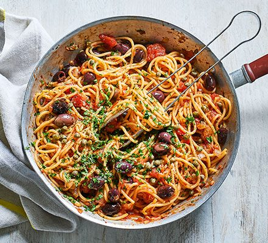

Pasta Puttanesca

Description
This deliciosly simple pasta can be made in a pinch from ingredients often found in
a well-stocked pantry. Despite the slightly odd name, the sauce is well balanced and
full of flavour.
Ingredients
- 500g Pasta (typically spaghetti)
- 400g Tin of peeled, whole tomatoes
- 2 cloves garlic, minced
- 3 tbsp capers
- 1/2 cup black olives, halved
- 1 small tin of anchovies
- 2 tbsp olive olives
- grated parmesan
Steps
- Pre-cook the spaghetti al dente
- Heat the olive oil in a saucepan
- Add the garlic and saute for one minute
- Add the anchovies and stir through
- Cut the tomatoes up slightly inside the tin and add to the pan
- Add the black olives and capers and simmer the sauce until it thickens
- Season to taste with salt, pepper and oregano
- Stir through the pasta, plate, and top with grated parmesan
Home